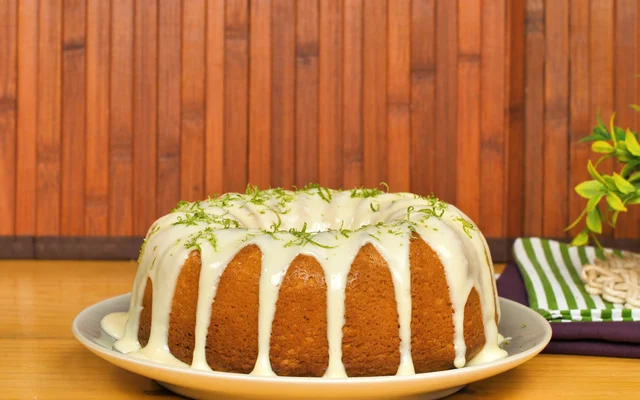

Bolo de limão

heh
Doce e azedinho na medida certa, esse bolo de limão vai transformar o seu café da manhã ou o lanche da tarde! Ideal para acompanhar aquele chá ou cafézinho de lei, ele tem uma massa fofinha com um aroma inconfundível que invade a casa toda desde o momento que assa no forno até quando é servido na mesa. Para isso, a receita de bolo de limão leva ingredientes simples como ovos, leite, manteiga, açúcar, suco e raspas de limão, farinha de trigo e fermento em pó. Se você achou que ele estava bom, calma que fica ainda melhor! Essa sobremesa ainda conta com uma cobertura de limão para bolo com mais raspas da fruta para dar aquela finalização digna de confeitaria, além de intensificar o seu sabor cítrico. Venha encantar a todos com uma receita fácil e deliciosa de bolo de limão que vai fazer com que todos não parem de comer!
Ingredientes (8 fatias)
Bolo
- 2 ovos
- 1 xícara (chá) de leite
- 3 colheres (sopa) de manteiga
- açúcar 1 e 1/2 xícara (chá) de açúcar
- suco de 2 limões
- raspas de limão
- 3 e 1/2 xícaras (chá) de farinha de trigo
- 2 colheres (sopa) de fermento em pó
Calda
- 2 colheres (sopa) de manteiga
- 1 lata de leite condensado
- 1 colher (sopa) de creme de leite
- suco de 1/2 limão
- raspas de limão a gosto
Modo de Preparo
Bolo
- Separe as claras das gemas e reserve as claras.
- Em um liquidificador, bata as gemas, o leite, a manteiga e o açúcar.
- Em uma tigela, acrescente o suco de dois limões e as raspas à mistura.
- Acrescente a farinha de trigo aos poucos.
- Bata as claras em neve e adicione à massa.
- Acrescente o fermento em pó.
- Leve ao forno preaquecido a 180º C por 40 minutos.
Calda
- Em uma frigideira, misture a manteiga, o leite condensado e o creme de leite.
- Quando estiver bem misturado, desligue o fogo e acrescente o suco de meio limão.
- Despeje a calda sobre o bolo desenformado.
- Finalize com raspas de limão.